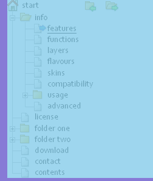
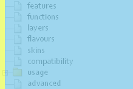
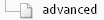

Advanced information
What the TreeMenu does
DOM manipulation
Some elements are inserted as hooks for visual effects, click events and keyboard events:
- A
<span>element is inserted before the link in every folder. This is used to add the and signs.
signs. - A
<span>element is also inserted inside the menu item<a>element pointing to the current page. It is used to show the sign. In the client-side mode, the link to the current page is also removed (as the user should not be able to "navigate" to the current page). The classcurrentis also added to the<a>element. - Two
<a>elements are inserted after the link of the root element, to show the icons to open and close all folders.
all folders. - In client-side mode following classes are added to the appropriate
<li>elements:document,folder,open,closedandlast. - In client-side mode the
rootclass is assigned to the root<a>element. - In both modes the classes
openandclosedon the<li>elements are dynamically changed to reflect the user's behavior. Also thetitleattribute of the corresponding<a>element is changed to reflect the new action coupled with the and signs.
DOM events
There are a few event handlers to keep track on what the user is doing:
- If
config.menuLinkElementis used, amenuJump()event handler is added forclickevents. ThemenuJump()function moves the focus to the menu. If you look into the code, you will find some Internet Explorer work-arounds for this. - The menu itself only needs two event handlers:
clickandkeydownevents, dispatching thecheckClickDynamic()andcheckKeyDynamic()functions. - Lastly, there is an
onunloadevent handler,save(), which saves the current state of the folders as a cookie.
To make the DOM easy to use in a fast and reliable way all whitespace nodes needs to be removed. Either you send HTML without whitespace in the menu, or the allowWhitespace call parameter should be set to true. It's faster to remove the whitespace once, even client-side, than to traverse to the correct node everywhere.
CSS magic
The main trick in painting the menu by using CSS, is that the vertical lines are painted with a CSS border. This makes it easy to scale the menu to accomodate different font sizes, but has the drawback of making dotted lines difficult to use, as long as browsers will paint those in different ways.
To make it easier to get a grip on what's going on, we have made screenshots of the menu elements while using Firebug to highlight different parts of the DOM.
This is the entire menu with some padding to the left and at the bottom:

This is the first <ul> element after the root <a> element. It contains the rest of the menu. A margin is applied to put the left border in the correct position (but it is added in the next stage, see below).
Inside the first <ul>, we find it's first <li> element. Left padding is used to indent to the new menu level. A left border is used to create the vertical line.
Inside this <li> element, we find a <span> element, used as a hook for the and signs. Note that the span is made bigger than the images, to make the clickable area bigger.
The <li> element also contains an <a> element, covering this area:
After the <a> element, there is an <ul> element with the nested menu items:

We will look closer on the first <li> element, to examine the structure of a regular menu item. A padding is used to give room for the horisontal line, added as a CSS background image.
The <li> element also handles the vertical line, using a left border, while the nested <a> element puts the document icon in place:
In this case there is also an empty <span> element, used to add the sign:
Finally, some <li> element has to be the last one in every <ul>. Caused by Internet Explorer 6, we can't rely solely on the :last-child pseudo-class, so these <li> elements get the class last added. The left border is removed, and a background image of a corner is added.
